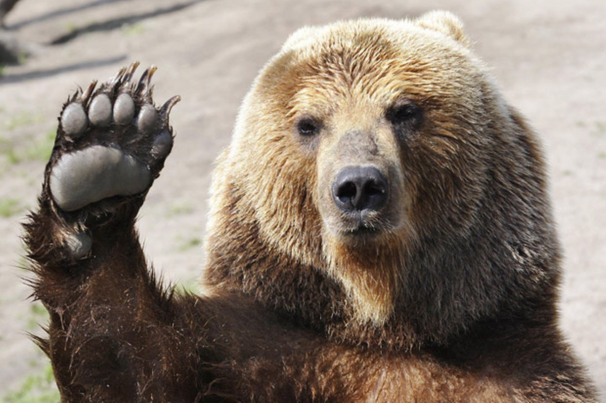

Animals are eukaryotic, multicellular organisms that form the biological kingdom Animalia.
With few exceptions, animals are motile (able to move), heterotrophic (consume organic material), reproduce sexually,
and their embryonic development includes a blastula stage. The body plan of the animal derives from this blastula,
differentiating specialized tissues and organs as it develops; this plan eventually becomes fixed,
although some undergo metamorphosis at some stage in their lives.
Etymology
The word "animal" comes from the Latin animalis, meaning having breath, having soul or living being.
The biological definition of the word refers to all members of the kingdom Animalia, encompassing creatures as diverse as sponges,
jellyfish, insects, and humans. In everyday non-scientific usage, the word often implies exclusion of humans – that is,
"animal" is used to refer only to non-human members of the kingdom Animalia; sometimes, only closer relatives of humans such as mammals and other vertebrates,
are meant.

Characteristics
Animals have several characteristics that set them apart from other living things.
Animals are eukaryotic and multicellular, which separates them from bacteria and most protists, which are prokaryotic and unicellular.
They are heterotrophic, generally digesting food in an internal chamber, which separates them from plants and algae, which are autotrophs.
They lack rigid cell walls, which separates them from plants, algae, and fungi, all of which do have rigid cell walls.
All animals are motile, if only at certain life stages. In most animals, embryos pass through a blastula stage,
which is a characteristic exclusive to animals, and which allows for differentiation into specialized tissues and organs.
Structure
All animals are composed of eukaryotic cells, surrounded by a characteristic extracellular matrix composed of collagen and elastic glycoproteins.
This may be calcified to form structures like shells, bones, and spicules.
During development, it forms a relatively flexible framework
upon which cells can move about and be reorganized, making complex structures possible.
In contrast, other multicellular organisms, like plants and fungi, have cells held in place by cell walls, and so develop by progressive growth.
Also, unique to animal cells are the following intercellular junctions: tight junctions, gap junctions, and desmosomes.[
With a few exceptions, most notably the sponges (Phylum Porifera) and Placozoa, animals have bodies differentiated into separate tissues.
These include muscles, which are able to contract and control locomotion, and nerve tissues, which send and process signals.
Typically, there is also an internal digestive chamber, with one or two openings.
Animals with this sort of organization are called metazoans, or eumetazoans when the former is used for animals in general.
Reproduction
Nearly all animals undergo some form of sexual reproduction.
They produce haploid gametes by meiosis (see Origin and function of meiosis).
The smaller, motile gametes are spermatozoa and the larger, non-motile gametes are ova.
These fuse to form zygotes, which develop via multiple successive mitoses and differentiation into new individuals (see Allogamy).
Some animals are also capable of asexual reproduction.
This may take place through parthenogenesis, where fertile eggs are produced without mating, budding, or fragmentation.
Embryonic development
A zygote initially develops into a hollow sphere, called a blastula,
which undergoes rearrangement and differentiation. In sponges, blastula larvae swim to a new location and develop into a new sponge.
In most other groups, the blastula undergoes more complicated rearrangement.
It first invaginates to form a gastrula with a digestive chamber, and two separate germ layers—an external ectoderm and an internal endoderm.
In most cases, a mesoderm also develops between them.
These germ layers then differentiate to form tissues and organs.
Food and energy sourcing
All animals are heterotrophs, meaning that they feed directly or indirectly on other living things.
They are often further subdivided into groups such as carnivores, herbivores, omnivores, and parasites.
Predation is a biological interaction where a predator (a heterotroph that is hunting) feeds on its prey (the organism that is attacked).
Predators may or may not kill their prey prior to feeding on them, but the act of predation almost always results in the death of the prey.
The other main category of consumption is detritivory, the consumption of dead organic matter.
It can at times be difficult to separate the two feeding behaviours, for example,
where parasitic species prey on a host organism and then lay their eggs on it for their offspring to feed on its decaying corpse.
Selective pressures imposed on one another has led to an evolutionary arms race between prey and predator, resulting in various antipredator adaptations.
Evolutionary origin
Animals are generally considered to have emerged within flagellated eukaryota.
Their closest known living relatives are the choanoflagellates, collared flagellates that have a morphology similar to the choanocytes of certain sponges.
Molecular studies place animals in a supergroup called the opisthokonts, which also include the choanoflagellates, fungi and a few small parasitic protists.
The name comes from the posterior location of the flagellum in motile cells, such as most animal spermatozoa,
whereas other eukaryotes tend to have anterior flagella.[52]
The first fossils that might represent animals appear in the Trezona Formation at Trezona Bore, West Central Flinders, South Australia.
These fossils are interpreted as being early sponges. They were found in 665-million-year-old rock.
The next oldest possible animal fossils are found towards the end of the Precambrian, around 610 million years ago, and are known as the Ediacaran or Vendian biota.
These are difficult to relate to later fossils, however.
Some may represent precursors of modern phyla, but they may be separate groups, and it is possible they are not really animals at all.
Number of living species
Animals can be divided into two broad groups: vertebrates (animals with a backbone) and invertebrates (animals without a backbone).
Half of all described vertebrate species are fishes and three-quarters of all described invertebrate species are insects.
Over 95% of the described animal species in the world are invertebrates.